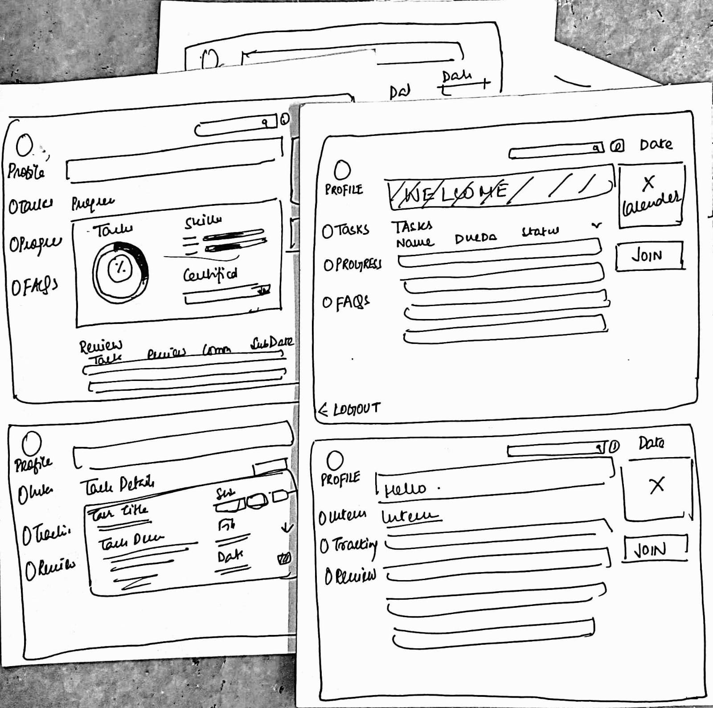

Building Internship Dashboard
Introduction
Inception Wave is a tech based company which gives students an opportunity to intern with them in fields of Human Resources, Marketing and Graphic Design. This is a web based dashboard which could be easily accessible to the interns as well as core team members responsible for the interns through credentials.
.webp)
What is the need for an Internship Dashboard?
Recently, in this pandemic situation, online work is very popular. However, it becomes difficult for the team members to communicate especially with interns as they are very new to the framework. Moreover in Inception Wave, tasks travel through 3 levels of management which is Core Team assigns it to HR Intern and HR Intern in turn assigns to Marketing or Design Intern. To avoid any confusion in reviewing, assigning and communicating tasks through members, we came up with a dashboard.
Before I moved on with the research, I sat with the team members to discuss their expectations, to understand the hierarchy and finally, came up with the goals of the project.
.webp)
User Research
I started out the project by interviewing the current interns as well as Core Team members of Inception Wave. Keeping in mind that the purpose of this dashboard is to perform work distribution as well as making management and communication easier, I aimed at the most common problems they were facing. Interviewing them also helped me to figure out what they expect from the dashboard such as additional features like reminders, comments on tasks, etc.
Using the results of the survey, I created two personas that embody the traits of the target audience.
Personas
.webp)
.webp)
Information Architecture
After conducting the interviews and several meetings with the team, I decided to write down a list of features under every type of user which is Core-Team Member, HR Interns and other Interns. Keeping this in mind, I came up with the structure i.e the Information Architecture of the dashboard.
.webp)
Wireframing
After finalising on our architecture, I jumped straight to sketching some of my ideas. This exercise helped me to accumulate all the features into frames and add important CTAs, elements such as forms,cards etc. After using pen and paper, it was time to finally start off with Figma. Keeping in mind that our developers are also students who are trying to learn, I tried to come up with something easy to implement yet aesthetically pleasing

Testing
After showing the designs/sketches to the team, there was a confusion in the task flow i.e how would a task get assigned as well as submitted using the structure of the design. To fix this, I came up with a User Journey, which not only helped the team but also the developers to understand the working of the dashboard and come up with feedback.
.webp)
Final UI